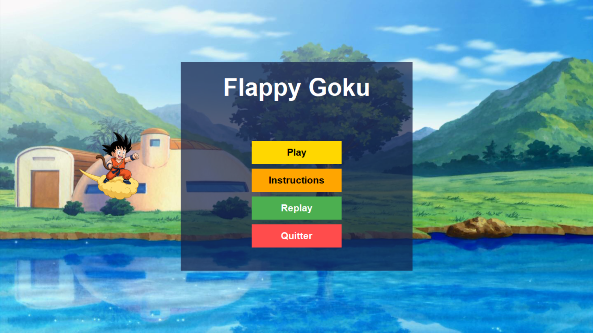

← Retour à l'accueil
FlapPIC-Bird – Jeu embarqué sur microcontrôleur
ECE Paris – ING4 SE Microcontroller · 2025

Objectif du projet
Reproduire le gameplay de Flappy Bird sur carte EasyPIC en développant un jeu temps réel :
la logique du jeu et la physique du « bird » sont exécutées sur microcontrôleur, l’affichage
étant géré à la fois sur un GLCD et sur une interface graphique Python via liaison USB.
Le joueur contrôle l’oiseau en utilisant plusieurs capteurs (IR, ultrasons, encodeur, bouton
poussoir) afin de comparer la précision et la réactivité de chaque mode de contrôle.
Contexte
Projet de microcontrôleur en équipe. Travail réalisé sur carte EasyPIC v7 avec PIC18, en C (compilateur XC8) et parties critiques en
assembleur inline. Le projet suit une approche en V : conception, développement, intégration,
tests et soutenance.
Architecture matérielle
Entrées
- Encodeur rotatif numérique (contrôle fin de l’altitude).
- Bouton poussoir (version simple du contrôle du bird).
- Capteur à ultrasons HC-SR04 (distance main–capteur → position du bird).
- Capteur infrarouge IR distance click (mesure de distance pour un autre mode de jeu).
Sorties
- Écran GLCD pour représenter visuellement le bird et les pipes.
- Interface graphique Python (Tkinter / customTkinter) communicant via USB/UART CDC.
- Buzzer pour le feedback sonore (collision, score, etc.).
- Afficheurs 7 segments pour la visualisation du score.
Le schéma complet du montage est réalisé sous KiCad à partir de la documentation EasyPIC v7,
en n’incluant que les parties réellement utilisées (µC, capteurs, GLCD, buzzer, USB).
Architecture logicielle & gameplay
-
Boucle de jeu en C avec gestion de la gravité, du flap et de la position du bird,
affichage de l’angle de vol sur le GLCD.
-
Menu principal piloté par boutons en pull-up : écran « Press start » clignotant à 1 Hz,
puis navigation vers Play, Instructions, Replay.
-
Communication USB avec la GUI Python basée sur interruptions (USB CDC) :
envoi des commandes et des événements de jeu en temps réel.
-
Implémentation de quatre modes de contrôle (encodeur, bouton, US, IR) au sein d’un
seul firmware, sans recâblage, grâce à un choix judicieux des IO et éventuellement un MUX.
-
Sauvegarde du meilleur score par mode dans l’EEPROM, score en direct sur 7-seg,
buzzer pour les événements critiques et mode « replay » accéléré de la dernière partie
(rejoue les commandes depuis le microcontrôleur).
Calibration & mesures
Chaque capteur est calibré en comparant distance ou angle théorique et valeur mesurée, afin
de caractériser linéarité, précision et plage de fonctionnement (capteurs US et IR, encodeur
rotatif). Les mesures servent à ajuster les conversions en unités physiques dans le code et à
choisir le mode le plus adapté au gameplay.
Rôle personnel & apports
- Programmation embarquée en C et assembleur (pilotage des capteurs, traitement des entrées).
- Mise en place de la communication série USB avec la GUI Python.
- Participation à la conception de l’architecture logicielle (états de jeu, gestion du menu, modes de contrôle).
- Tests sur oscilloscope et validation des timings (période 1 Hz, signaux capteurs, trames série).
- Contribution à la rédaction du rapport (modélisation du jeu, choix techniques, résultats de tests).
Résultats
Le système permet de jouer à une version de Flappy Bird contrôlée par différents capteurs,
avec affichage simultané sur GLCD et sur la GUI Python. Le jeu intègre menu complet, stockage
des meilleurs scores, effets sonores et mode replay, tout en respectant les contraintes temps réel
et les spécifications imposées.
PIC18 / EasyPIC v7
XC8
C & assembleur
Systèmes embarqués
Interruptions & timers
USB CDC
GLCD
Tkinter / Python
Capteurs IR / US / encodeur